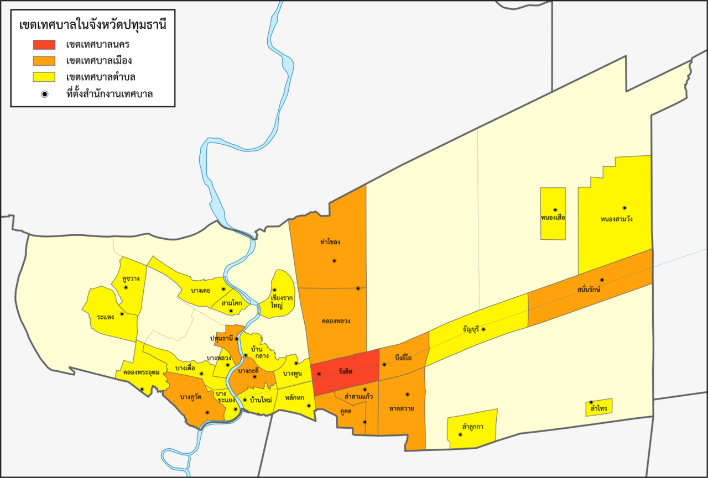
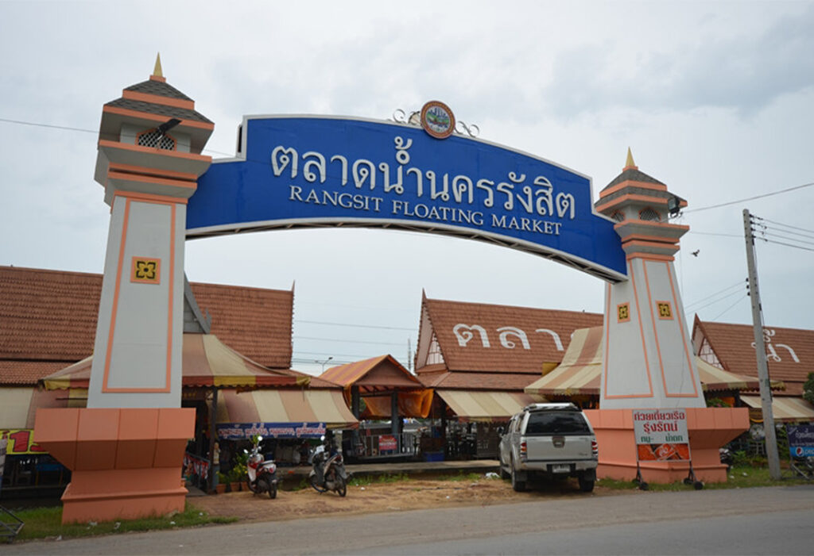
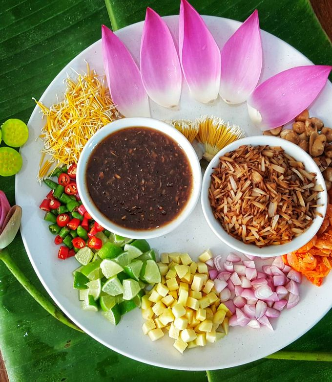

จังหวัดปทุมธานี
ประวัติศาสตร์ จังหวัดปทุมธานีมีความเป็นถิ่นฐานบ้านเมืองมาแล้วไม่น้อยกว่า 300 ปี นับตั้งแต่รัชสมัยสมเด็จพระนารายณ์มหาราชแห่งกรุงศรีอยุธยา คือ เมื่อ พ.ศ. 2202 มังนันทมิตรได้กวาดต้อนครอบครัวมอญ เมืองเมาะตะมะ อพยพหนีภัยจากศึกพม่า เข้ามาพึ่งพระบรมโพธิสมภารสมเด็จพระเจ้าอยู่หัวกรุงเทพทวารวดีศรีอยุธยา ซึ่งสมเด็จพระนารายณ์มหาราชทรงพระกรุณาโปรดเกล้าฯ ให้ครอบครัวมอญเหล่านั้นไปตั้งบ้านเรือนอยู่ที่บ้านสามโคก ต่อมาในแผ่นดินสมเด็จพระเจ้าตากสินมหาราชแห่งกรุงธนบุรี ชาวมอญได้อพยพหนีพม่าเข้ามาพึ่งพระบรมโพธิสมภารอีกเป็นครั้งที่ 2 พระองค์ทรงพระกรุณาโปรดเกล้าฯ ให้ตั้งบ้านเรือนที่บ้านสามโคกอีก และในรัชกาลพระบาทสมเด็จพระพุทธเลิศหล้านภาลัย ก็ได้มีการอพยพชาวมอญครั้งใหญ่จากเมืองเมาะตะมะเข้าสู่ประเทศไทยเรียกว่า "มอญใหญ่" พระองค์ทรงพระกรุณาโปรดเกล้าฯ ให้ชาวมอญบางส่วนตั้งบ้านเรือนอยู่ที่บ้านสามโคกอีกเช่นเดียวกัน จากชุมชนขนาดเล็ก บ้านสามโคกจึงกลายเป็น เมืองสามโคก ในเวลาต่อมา ต่อมาเมื่อวันที่ 23 สิงหาคม พ.ศ. 2358 พระบาทสมเด็จพระพุทธเลิศหล้านภาลัยโปรดเกล้าฯ ให้เปลี่ยนชื่อเมืองสามโคก เป็น เมืองประทุมธานี และเมื่อ พ.ศ. 2461 พระบาทสมเด็จพระมงกุฎเกล้าเจ้าอยู่หัวโปรดเกล้าฯ ให้ใช้คำว่า "จังหวัด" แทน "เมือง" และให้เปลี่ยนการสะกดชื่อใหม่จาก "ประทุมธานี" เป็น "ปทุมธานี" กลายเป็น จังหวัดปทุมธานี ต่อมาเมื่อ พ.ศ. 2475 ในสมัยพระบาทสมเด็จพระปกเกล้าเจ้าอยู่หัวโปรดเกล้าฯ ให้ยุบจังหวัดธัญบุรีมาขึ้นกับจังหวัดปทุมธานี จังหวัดปทุมธานีจึงได้แบ่งการปกครองเป็น 7 อำเภอดังเช่นปัจจุบัน
จุดเด่นของจังหวัดปทุมธานี
จุดเด่นของจังหวัดปทุมธานีคือ การผสมผสานระหว่างความเป็นเมืองแห่งวัฒนธรรมและธรรมะ โดยมีแหล่งท่องเที่ยวที่น่าสนใจหลากหลาย ทั้งวัดเก่าแก่ที่มีประวัติศาสตร์ เช่น วัดโบสถ์ และวัดวาอารามจำนวนมากที่ทำให้เป็น "นครธรรมะ" นอกจากนี้ยังเป็น ศูนย์กลางการศึกษาและวิทยาศาสตร์ ด้วยพิพิธภัณฑ์หลายแห่งและมหาวิทยาลัย 11 แห่ง และมี วิถีชีวิตริมน้ำที่โดดเด่น ซึ่งยังคงรักษาเสน่ห์ของชุมชนริมน้ำไว้ได้
อาหารขึ้นชื่อของจังหวัดปทุมธานี
เมี่ยงคำกลีบบัว:เป็นเมนูพิเศษที่ใช้ดอกบัวหลวงแทนใบอ่อน มีความหอมและสีสันสวยงาม
ข้าวแช่รามัญ:เป็นอาหารมอญโบราณที่ได้รับความนิยม สามารถหาทานได้ตามตลาดและร้านอาหารต่างๆ